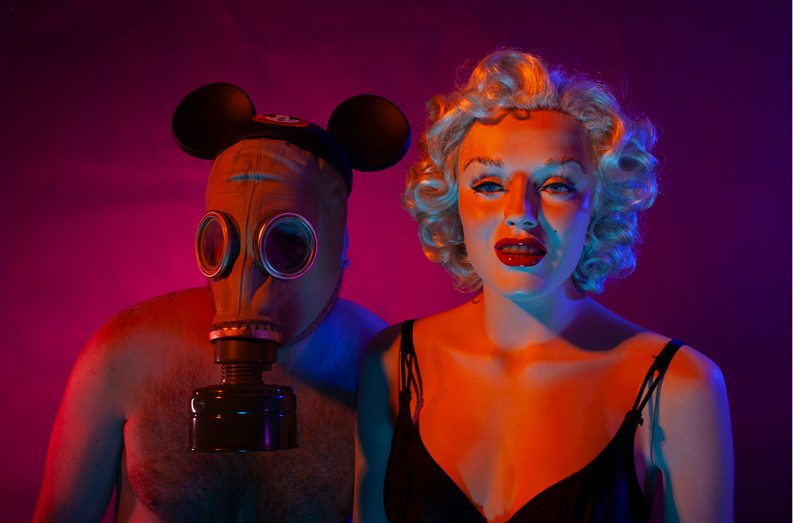
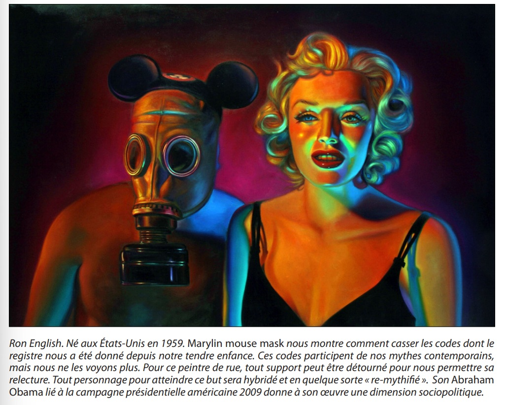

Provenance
Artist's personal collection.
Exhibitions
Mythographic Vicissitudes, FIFTY24SF Gallery, San Francisco, California, US, January 8–29, 2009.
Lazarus Rising, Elms Lesters Painting Rooms, London, UK, May 8–June 6, 2009.
Literature
Ron English, Lazarus Rising (London: Elms Lesters Painting Rooms, 2009), p. 17.

Notes
The work’s inclusion in Lazarus Rising is documented in the exhibition catalogue.
The Kadath PDF Psychohistoire du mythe discusses this work in relation to contemporary myth, spelling the title as Marylin mouse mask.
Ancillary Documentation



